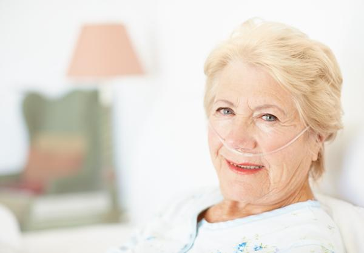

Oxygen toxicity happens when breathing in too much extra oxygen harms your lungs or nervous system. It is also called oxygen poisoning.
Your body needs oxygen to work. When you breathe in air, your lungs transfer oxygen into your blood. This happens in tiny air sacs in the lungs called alveoli. Then, your heart pumps the blood with oxygen all around your body.
Too much oxygen for too long can damage the lungs. The alveoli may collapse. This can make it hard to breathe and lower the amount of oxygen your body gets.
In rare cases, oxygen toxicity can also affect the blood flow from your heart, as well as the brain, and how it communicates with your body.
Oxygen toxicity happens from high levels of oxygen for too long. It is more likely if:
You are using a breathing machine, called a ventilator, in the hospital.
You are having hyperbaric oxygen therapy.
You are using oxygen tanks for scuba diving.
You are on long-term oxygen therapy at home.
Some medicines and therapies can raise the risk of oxygen toxicity. These include a common heart medicine called amiodarone and chemotherapy, and radiation for cancer.

You may have symptoms that affect your lungs, brain, or nerves. Call your care team if you notice:
Coughing: A dry or frequent cough
Sore throat: Mild throat pain or irritation
Chest pain: Feeling tightness or discomfort in your chest
Shortness of breath: Feeling like you cannot get enough air
Muscle twitching: Movements in the face, hands, or arms you cannot control
Blurred vision: Trouble seeing clearly
Dizziness or confusion: Feeling lightheaded or mixed up
Nausea or upset stomach: Feeling like you might throw up
Feeling uneasy or restless: A sense that something is wrong
Seizures: Sudden shaking or jerking
Your care team may:
Measure your oxygen level with a clip on your finger
Take a blood test to check how much oxygen is in your blood
Do a chest X-ray or CT scan to look at your lungs
Lower or stop your oxygen treatment
Give you breathing support or medicine
If you have a collapsed lung, you will need further care.
If your oxygen was causing harm, your care team will change your treatment to make it safer. Your lungs may take time to heal. Follow all home instructions closely. Your care team may give you medicine to lower lung swelling or help you breathe.
Use oxygen as directed: Use only the amount your care team tells you to. Always check with your care team before increasing your oxygen setting.
Eat healthy meals: Good food helps your body heal and stay strong.
Stay hydrated: Drink water to help your lungs stay clear.
Avoid smoking: Smoke can harm your lungs and raise your risk. Smoking or being near any fire with oxygen can cause fires and lead to burns.
Sleep with your head raised: This can help make breathing easier.
Take breaks often: Rest if you feel short of breath.
Avoid high places: High altitudes may lower the oxygen in your body.
Check your oxygen if told to: Use your home device if you have one.
Avoid fire and heat: Avoid open flames or smoking when using oxygen.
Your care team may suggest pulmonary rehab, a program that helps you breathe better and get stronger.
Start with short walks if cleared to move.
Use your oxygen during activity if instructed.
Rest if you feel tired or dizzy.
Your lungs may take weeks or more to heal.
Follow-up visits help your care team check your breathing and oxygen needs.
Your oxygen therapy may be adjusted over time to fit your needs.
Tell your care team if symptoms come back or change.
Having breathing trouble can be scary. It is OK to feel nervous or worried. Healing takes time, and your care team is here to help you. Talk to them if you feel overwhelmed.
Call your care team if you have:
Any changes in breathing
New or worsening symptoms
Throat irritation
A cough that will not go away
Blurry or changed vision
Nausea or strange feelings
Any concerns about your oxygen or your treatment
Get help right away if:
You have severe trouble breathing or cannot catch your breath.
You have confusion or cannot think clearly.
You have chest pain, especially with tightness, pressure, sweating, nausea, or fainting.
You are shaking or having a seizure.
Your lips or skin turn blue or pale.
You are coughing up blood.
You feel faint or cannot stay awake.
Thank you for trusting us with your care. We are here to support you and want you to feel your best. Contact us with any questions.
IF YOU HAVE A MEDICAL EMERGENCY, CALL 911 OR GO TO THE EMERGENCY ROOM.
The information presented is intended for general information and educational purposes. It is not intended to replace the advice of your health care provider. Contact your health care provider if you believe you have a health problem.
Last updated May 2025
© 2025 Mytonomy, Inc. All rights reserved.